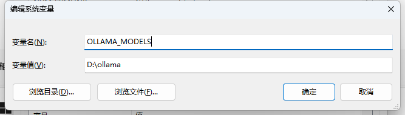

使用Ollama在Windows的CPU上运行大模型
一、下载并按照Ollama
本文以Windows平台为例，想必在Linux或者Mac上使用的同学不是很需要看这篇文章，基本都是有运维或编程基础的同学。
1.1 下载
Ollama的官网比较简洁，打开就能看到“Download”按钮，点击选择适合自己电脑的Ollama安装即可。

1.2 安装
-
安装前，先配置一下Ollama的系统变量（在高级），变量名称为“OLLAMA_MODELS”，变量值自己找一个位置即可。

当然，如果你只有一个C盘，或者不需要考虑C盘剩余空间的话，就无需配置了。
这个路径，就是后面Ollama下载模型的路径，基本都是几百M起步，大的可能数十G。
-
安装Ollama，这一步没啥可讲的，无脑下一步即可。
1.3 检查是否安装成功
首先运行命令窗口，输入ollama，如果命令无效，检查Ollama是否启动了，或者尝试重启系统，检查环境变量是否存在Ollama的安装路径等操作。

二、下载模型 并 运行模型
2.1 ollama官方模型库
需要啥模型，自己来找吧，根据自己电脑配置，尝试不同参数量的模型。

2.3 下载Qwen2:0.5b
这里演示一下下载Qwen2的0.5b参数，这个模型小下的快，在一个我的ThinkPad太拉了，实在是不配跑更大的模型。

模型库找到Qwen2，选择0.5b，右侧会自动生成运行命令，直接在命令窗口运行即可。

正在下载模型，下载完后会自动启动模型，这时候下载的数据，就会放到第一配好的环境变量路径上。

这个回答属实是我没想到的，哈哈哈哈哈哈哈哈哈哈哈哈哈。但是我大约得体验了一下0.5b这个模型，感觉已经很不错了，毕竟才0.5b的参数量，剩下的就需要自己进行微调了。
三、后文
3.1 ollama模型库不存在的模型
其实本来我是想使用ollama来跑一下OpenBMB的miniCPM2.6，毕竟号称端侧比较厉害的大模型，没想到，下载以后，没有跑起来，因为现在Ollama官方还不支持miniCPM。
好消息是，Ollama官方近期应该会合并OpenBMB的分支，以支持miniCPM。如果你迫不及待的想尝试一下，可以自己去编译OpenBMB分支的Ollama。
这里附上地址:
3.2 温馨提示
目前qwen2:0.5b模型在一些“特意”提示词的引导下，可能会生成不符合法律法规的内容，开发者在使用时，应特别注意！
不分境外的大模型，可能会生成严重的政治错误内容，开发者在使用时，应特别注意！
目前大陆境内，上线大模型公共服务，需要备案，也请开发者注意！